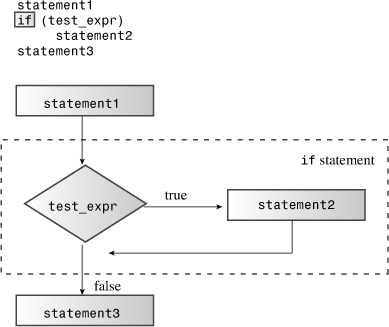
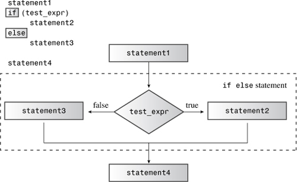
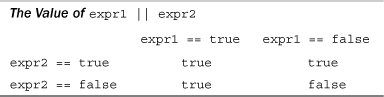
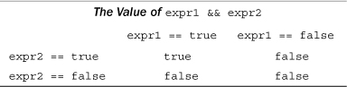
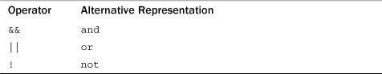
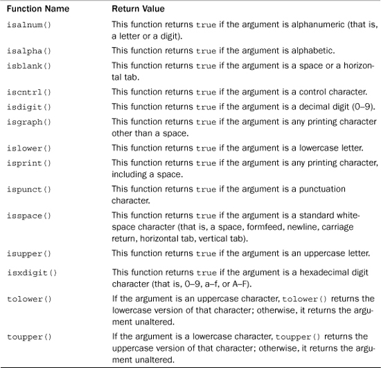
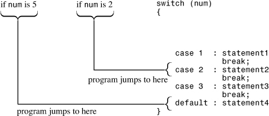
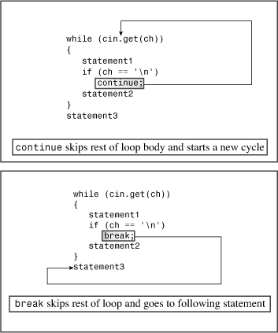

In this chapter you’ll learn about the following:
• The if statement
• The if else statement
• Logical operators: &&, ||, and !
• The cctype library of character functions
• The conditional operator: ?:
• The switch statement
• The continue and break statements
• Number-reading loops
• Basic file input/output
One of the keys to designing intelligent programs is to give them the ability to make decisions. Chapter 5, “Loops and Relational Expressions,” shows one kind of decision making—looping—in which a program decides whether to continue looping. This chapter investigates how C++ lets you use branching statements to decide among alternative actions. Which vampire-protection scheme (garlic or cross) should the program use? What menu choice has the user selected? Did the user enter a zero? C++ provides the if and switch statements to implement decisions, and they are this chapter’s main topics. This chapter also looks at the conditional operator, which provides another way to make a choice, and the logical operators, which let you combine two tests into one. Finally, the chapter takes a first look at file input/output.
if StatementWhen a C++ program must choose whether to take a particular action, you usually implement the choice with an if statement. The if comes in two forms: if and if else. Let’s investigate the simple if first. It’s modeled after ordinary English, as in “If you have a Captain Cookie card, you get a free cookie.” The if statement directs a program to execute a statement or statement block if a test condition is true and to skip that statement or block if the condition is false. Thus, an if statement lets a program decide whether a particular statement should be executed.
The syntax for the if statement is similar to the that of the while syntax:
if (test-condition)
statement
A true test-condition causes the program to execute statement, which can be a single statement or a block. A false test-condition causes the program to skip statement (see Figure 6.1). As with loop test conditions, an if test condition is type cast to a bool value, so zero becomes false and nonzero becomes true. The entire if construction counts as a single statement.
Figure 6.1. The structure of if statements.

Most often, test-condition is a relational expression such as those used to control loops. Suppose, for example, that you want a program that counts the spaces in the input as well as the total number of characters. You can use cin.get(char) in a while loop to read the characters and then use an if statement to identify and count the space characters. Listing 6.1 does just that, using the period (.) to recognize the end of a sentence.
// if.cpp -- using the if statement
#include <iostream>
int main()
{
using std::cin; // using declarations
using std::cout;
char ch;
int spaces = 0;
int total = 0;
cin.get(ch);
while (ch != '.') // quit at end of sentence
{
if (ch == ' ') // check if ch is a space
++spaces;
++total; // done every time
cin.get(ch);
}
cout << spaces << " spaces, " << total;
cout << " characters total in sentence\n";
return 0;
}
Here’s some sample output from the program in Listing 6.1:
The balloonist was an airhead
with lofty goals.
6 spaces, 46 characters total in sentence
As the comments in Listing 6.1 indicate, the ++spaces; statement is executed only when ch is a space. Because it is outside the if statement, the ++total; statement is executed in every loop cycle. Note that the total count includes the newline character that is generated by pressing Enter.
if else StatementWhereas an if statement lets a program decide whether a particular statement or block is executed, an if else statement lets a program decide which of two statements or blocks is executed. It’s an invaluable statement for creating alternative courses of action. The C++ if else statement is modeled after simple English, as in “If you have a Captain Cookie card, you get a Cookie Plus Plus, else you just get a Cookie d’Ordinaire.” The if else statement has this general form:
if (test-condition)
statement1
else
statement2
If test-condition is true, or nonzero, the program executes statement1 and skips over statement2. Otherwise, when test-condition is false, or zero, the program skips statement1 and executes statement2 instead. So the following code fragment prints the first message if answer is 1492 and prints the second message otherwise:
if (answer == 1492)
cout << "That's right!\n";
else
cout << "You'd better review Chapter 1 again.\n";
Each statement can be either a single statement or a statement block delimited by braces (see Figure 6.2). The entire if else construct counts syntactically as a single statement.
Figure 6.2. The structure of if else statements.

For example, suppose you want to alter incoming text by scrambling the letters while keeping the newline character intact. In that case, each line of input is converted to an output line of equal length. This means you want the program to take one course of action for newline characters and a different course of action for all other characters. As Listing 6.2 shows, if else makes this task easy. The listing also illustrates the std:: qualifier, one of the alternatives to a using directive.
// ifelse.cpp -- using the if else statement
#include <iostream>
int main()
{
char ch;
std::cout << "Type, and I shall repeat.\n";
std::cin.get(ch);
while (ch != '.')
{
if (ch == '\n')
std::cout << ch; // done if newline
else
std::cout << ++ch; // done otherwise
std::cin.get(ch);
}
// try ch + 1 instead of ++ch for interesting effect
std::cout << "\nPlease excuse the slight confusion.\n";
// std::cin.get();
// std::cin.get();
return 0;
}
Here’s some sample output from the program in Listing 6.2:
Type, and I shall repeat.
An ineffable joy suffused me as I beheld
Bo!jofggbcmf!kpz!tvggvtfe!nf!bt!J!cfifme
the wonders of modern computing.
uif!xpoefst!pg!npefso!dpnqvujoh
Please excuse the slight confusion.
Note that one of the comments in Listing 6.2 suggests that changing ++ch to ch+1 has an interesting effect. Can you deduce what it will be? If not, try it out and then see if you can explain what’s happening. (Hint: Think about how cout handles different types.)
if else StatementsKeep in mind that the two alternatives in an if else statement must be single statements. If you need more than one statement, you must use braces to collect them into a single block statement. Unlike some languages, such as BASIC and FORTRAN, C++ does not automatically consider everything between if and else a block, so you have to use braces to make the statements a block. The following code, for example, produces a compiler error:
if (ch == 'Z')
zorro++; // if ends here
cout << "Another Zorro candidate\n";
else // wrong
dull++;
cout << "Not a Zorro candidate\n";
The compiler sees it as a simple if statement that ends with the zorro++; statement.
Then there is a cout statement. So far, so good. But then there is what the compiler perceives as an unattached else, and that is flagged as a syntax error.
You add braces to group statements into a single statement block:
if (ch == 'Z')
{ // if true block
zorro++;
cout << "Another Zorro candidate\n";
}
else
{ // if false block
dull++;
cout << "Not a Zorro candidate\n";
}
Because C++ is a free-form language, you can arrange the braces as you like, as long as they enclose the statements. The preceding code shows one popular format. Here’s another:
if (ch == 'Z') {
zorro++;
cout << "Another Zorro candidate\n";
}
else {
dull++;
cout << "Not a Zorro candidate\n";
}
The first form emphasizes the block structure for the statements, whereas the second form more closely ties the blocks to the keywords if and else. Either style is clear and consistent and should serve you well; however, you may encounter an instructor or employer with strong and specific views on the matter.
if else if else ConstructionComputer programs, like life, might present you with a choice of more than two selections. You can extend the C++ if else statement to meet such a need. As you’ve seen, the else should be followed by a single statement, which can be a block. Because an if else statement itself is a single statement, it can follow an else:
if (ch == 'A')
a_grade++; // alternative # 1
else
if (ch == 'B') // alternative # 2
b_grade++; // subalternative # 2a
else
soso++; // subalternative # 2b
If ch is not 'A', the program goes to the else. There, a second if else subdivides that alternative into two more choices. C++’s free formatting enables you to arrange these elements into an easier-to-read format:
if (ch == 'A')
a_grade++; // alternative # 1
else if (ch == 'B')
b_grade++; // alternative # 2
else
soso++; // alternative # 3
This looks like a new control structure—an if else if else structure. But actually it is one if else contained within a second. This revised format looks much cleaner, and it enables you to skim through the code to pick out the different alternatives. This entire construction still counts as one statement.
Listing 6.3 uses this preferred formatting to construct a modest quiz program.
// ifelseif.cpp -- using if else if else
#include <iostream>
const int Fave = 27;
int main()
{
using namespace std;
int n;
cout << "Enter a number in the range 1-100 to find ";
cout << "my favorite number: ";
do
{
cin >> n;
if (n < Fave)
cout << "Too low -- guess again: ";
else if (n > Fave)
cout << "Too high -- guess again: ";
else
cout << Fave << " is right!\n";
} while (n != Fave);
return 0;
}
Here’s some sample output from the program in Listing 6.3:
Enter a number in the range 1-100 to find my favorite number: 50
Too high -- guess again: 25
Too low -- guess again: 37
Too high -- guess again: 31
Too high -- guess again: 28
Too high -- guess again: 27
27 is right!
Often you must test for more than one condition. For example, for a character to be a lowercase letter, its value must be greater than or equal to 'a' and less than or equal to 'z'. Or, if you ask a user to respond with a y or an n, you want to accept uppercase (Y and N) as well as lowercase. To meet this kind of need, C++ provides three logical operators to combine or modify existing expressions. The operators are logical OR, written ||; logical AND, written &&; and logical NOT, written !. Let’s examine them now.
||In English, the word or can indicate when one or both of two conditions satisfy a requirement. For example, you can go to the MegaMicro company picnic if you or your spouse work for MegaMicro, Inc. The C++ equivalent is the logical OR operator, written ||. This operator combines two expressions into one. If either or both of the original expressions is true, or nonzero, the resulting expression has the value true. Otherwise, the expression has the value false. Here are some examples:
5 == 5 || 5 == 9 // true because first expression is true
5 > 3 || 5 > 10 // true because first expression is true
5 > 8 || 5 < 10 // true because second expression is true
5 < 8 || 5 > 2 // true because both expressions are true
5 > 8 || 5 < 2 // false because both expressions are false
Because the || has a lower precedence than the relational operators, you don’t need to use parentheses in these expressions. Table 6.1 summarizes how the || operator works.

C++ provides that the || operator is a sequence point. That is, any value changes indicated on the left side take place before the right side is evaluated. (Or in the newer parlance of C++11, the subexpression to the left of the operator is sequenced before the subexpression to the right.) For example, consider the following expression:
i++ < 6 || i == j
Suppose i originally has the value 10. By the time the comparison with j takes place, i has the value 11. Also C++ won’t bother evaluating the expression on the right if the expression on the left is true, for it only takes one true expression to make the whole logical expression true. (The semicolon and the comma operator, recall, are also sequence points.)
Listing 6.4 uses the || operator in an if statement to check for both uppercase and lowercase versions of a character. Also it uses C++’s string concatenation feature (see Chapter 4, “Compound Types”) to spread a single string over three lines.
// or.cpp -- using the logical OR operator
#include <iostream>
int main()
{
using namespace std;
cout << "This program may reformat your hard disk\n"
"and destroy all your data.\n"
"Do you wish to continue? <y/n> ";
char ch;
cin >> ch;
if (ch == 'y' || ch == 'Y') // y or Y
cout << "You were warned!\a\a\n";
else if (ch == 'n' || ch == 'N') // n or N
cout << "A wise choice ... bye\n";
else
cout << "That wasn't a y or n! Apparently you "
"can't follow\ninstructions, so "
"I'll trash your disk anyway.\a\a\a\n";
return 0;
}
(The program doesn’t really carry out any threats.) Here is a sample run of the program in Listing 6.4:
This program may reformat your hard disk
and destroy all your data.
Do you wish to continue? <y/n> N
A wise choice ... bye
The program reads just one character, so only the first character in the response matters. That means the user could have input NO! instead of N. The program would just read the N. But if the program tried to read more input later, it would start at the O.
&&The logical AND operator, written &&, also combines two expressions into one. The resulting expression has the value true only if both of the original expressions are true. Here are some examples:
5 == 5 && 4 == 4 // true because both expressions are true
5 == 3 && 4 == 4 // false because first expression is false
5 > 3 && 5 > 10 // false because second expression is false
5 > 8 && 5 < 10 // false because first expression is false
5 < 8 && 5 > 2 // true because both expressions are true
5 > 8 && 5 < 2 // false because both expressions are false
Because the && has a lower precedence than the relational operators, you don’t need to use parentheses in these expressions. Like the || operator, the && operator acts as a sequence point, so the left side is evaluated, and any side effects are carried out before the right side is evaluated. If the left side is false, the whole logical expression must be false, so C++ doesn’t bother evaluating the right side in that case. Table 6.2 summarizes how the && operator works.

Listing 6.5 shows how to use && to cope with a common situation, terminating a while loop, for two different reasons. In the listing, a while loop reads values into an array. One test (i < ArSize) terminates the loop when the array is full. The second test (temp >= 0) gives the user the option of quitting early by entering a negative number. The program uses the && operator to combine the two tests into a single condition. The program also uses two if statements, an if else statement, and a for loop, so it demonstrates several topics from this chapter and Chapter 5.
// and.cpp -- using the logical AND operator
#include <iostream>
const int ArSize = 6;
int main()
{
using namespace std;
float naaq[ArSize];
cout << "Enter the NAAQs (New Age Awareness Quotients) "
<< "of\nyour neighbors. Program terminates "
<< "when you make\n" << ArSize << " entries "
<< "or enter a negative value.\n";
int i = 0;
float temp;
cout << "First value: ";
cin >> temp;
while (i < ArSize && temp >= 0) // 2 quitting criteria
{
naaq[i] = temp;
++i;
if (i < ArSize) // room left in the array,
{
cout << "Next value: ";
cin >> temp; // so get next value
}
}
if (i == 0)
cout << "No data--bye\n";
else
{
cout << "Enter your NAAQ: ";
float you;
cin >> you;
int count = 0;
for (int j = 0; j < i; j++)
if (naaq[j] > you)
++count;
cout << count;
cout << " of your neighbors have greater awareness of\n"
<< "the New Age than you do.\n";
}
return 0;
}
Note that the program in Listing 6.5 places input into the temporary variable temp. Only after it verifies that the input is valid does the program assign the value to the array.
Here are a couple of sample runs of the program. One terminates after six entries:
Enter the NAAQs (New Age Awareness Quotients) of
your neighbors. Program terminates when you make
6 entries or enter a negative value.
First value: 28
Next value: 72
Next value: 15
Next value: 6
Next value: 130
Next value: 145
Enter your NAAQ: 50
3 of your neighbors have greater awareness of
the New Age than you do.
The second run terminates after a negative value is entered:
Enter the NAAQs (New Age Awareness Quotients) of
your neighbors. Program terminates when you make
6 entries or enter a negative value.
First value: 123
Next value: 119
Next value: 4
Next value: 89
Next value: -1
Enter your NAAQ: 123.031
0 of your neighbors have greater awareness of
the New Age than you do.
The following is the input part of the program in Listing 6.5:
cin >> temp;
while (i < ArSize && temp >= 0) // 2 quitting criteria
{
naaq[i] = temp;
++i;
if (i < ArSize) // room left in the array,
{
cout << "Next value: ";
cin >> temp; // so get next value
}
}
The program begins by reading the first input value into a temporary variable called temp. Then the while test condition checks whether there is still room left in the array (i < ArSize) and whether the input value is non-negative (temp >= 0). If it is, the program copies the temp value to the array and increases the array index by one. At that point, because array numbering starts at zero, i equals the total number of entries to date. That is, if i starts out at 0, the first cycle through the loop assigns a value to naaq[0] and then sets i to 1.
The loop terminates when the array is filled or when the user enters a negative number. Note that the loop reads another value into temp only if i is less than ArSize—that is, only if there is still room left in the array.
After it gets data, the program uses an if else statement to comment if no data was entered (that is, if the first entry was a negative number) and to process the data if any is present.
&&The && operator also lets you set up a series of if else if else statements, with each choice corresponding to a particular range of values. Listing 6.6 illustrates the approach. It also shows a useful technique for handling a series of messages. Just as a pointer-to-char variable can identify a single string by pointing to its beginning, an array of pointers-to-char can identify a series of strings. You simply assign the address of each string to a different array element. Listing 6.6 uses the qualify array to hold the addresses of four strings. For example, qualify[1] holds the address of the string "mud tug-of-war\n". The program can then use qualify[1] as it would any other pointer to a string—for example, with cout or with strlen() or strcmp(). Using the const qualifier protects these strings from accidental alterations.
// more_and.cpp -- using the logical AND operator
#include <iostream>
const char * qualify[4] = // an array of pointers
{ // to strings
"10,000-meter race.\n",
"mud tug-of-war.\n",
"masters canoe jousting.\n",
"pie-throwing festival.\n"
};
int main()
{
using namespace std;
int age;
cout << "Enter your age in years: ";
cin >> age;
int index;
if (age > 17 && age < 35)
index = 0;
else if (age >= 35 && age < 50)
index = 1;
else if (age >= 50 && age < 65)
index = 2;
else
index = 3;
cout << "You qualify for the " << qualify[index];
return 0;
}
Here is a sample run of the program in Listing 6.6:
Enter your age in years: 87
You qualify for the pie-throwing festival.
The entered age doesn’t match any of the test ranges, so the program sets index to 3 and then prints the corresponding string.
In Listing 6.6, the expression age > 17 && age < 35 tests for ages between the two values—that is, ages in the range 18–34. The expression age >= 35 && age < 50 uses the >= operator to include 35 in its range, which is 35–49. If the program used age > 35 && age < 50, the value 35 would be missed by all the tests. When you use range tests, you should check that the ranges don’t have holes between them and that they don’t overlap. Also you need to be sure to set up each range correctly; see the sidebar “Range Tests,” later in this section.
The if else statement serves to select an array index, which, in turn, identifies a particular string.
!The ! operator negates, or reverses the truth value of, the expression that follows it. That is, if expression is true, then !expression is false—and vice versa. More precisely, if expression is true, or nonzero, then !expression is false. Incidentally, many people call the exclamation point bang, making !x “bang-ex” and !!x “bang-bang-ex.”
Usually you can more clearly express a relationship without using the ! operator:
if (!(x > 5)) // if (x <= 5) is clearer
But the ! operator can be useful with functions that return true/false values or values that can be interpreted that way. For example, strcmp(s1,s2) returns a nonzero (true) value if the two C-style strings s1 and s2 are different from each other and a zero value if they are the same. This implies that !strcmp(s1,s2) is true if the two strings are equal.
Listing 6.7 uses the technique of applying the ! operator to a function return value to screen numeric input for suitability to be assigned to type int. The user-defined function is_int(), which we’ll discuss further in a moment, returns true if its argument is within the range of values that can be assigned to type int. The program then uses the test while(!is_int(num)) to reject values that don’t fit in the range.
// not.cpp -- using the not operator
#include <iostream>
#include <climits>
bool is_int(double);
int main()
{
using namespace std;
double num;
cout << "Yo, dude! Enter an integer value: ";
cin >> num;
while (!is_int(num)) // continue while num is not int-able
{
cout << "Out of range -- please try again: ";
cin >> num;
}
int val = int (num); // type cast
cout << "You've entered the integer " << val << "\nBye\n";
return 0;
}
bool is_int(double x)
{
if (x <= INT_MAX && x >= INT_MIN) // use climits values
return true;
else
return false;
}
Here is a sample run of the program in Listing 6.7 on a system with a 32-bit int:
Yo, dude! Enter an integer value: 6234128679
Out of range -- please try again: -8000222333
Out of range -- please try again: 99999
You've entered the integer 99999
Bye
If you enter a too-large value to a program reading a type int, many C++ implementations simply truncate the value to fit, without informing you that data was lost. The program in Listing 6.7 avoids that by first reading the potential int as a double. The double type has more than enough precision to hold a typical int value, and its range is much greater. Another choice for holding the input value would be the long long type, assuming that it is wider than int.
The Boolean function is_int() uses the two symbolic constants (INT_MAX and INT_MIN), defined in the climits file (discussed in Chapter 3, “Dealing with Data”), to determine whether its argument is within the proper limits. If so, the program returns a value of true; otherwise, it returns false.
The main() program uses a while loop to reject invalid input until the user gets it right. You could make the program friendlier by displaying the int limits when the input is out of range. After the input has been validated, the program assigns it to an int variable.
As mentioned earlier in this chapter, the C++ logical OR and logical AND operators have a lower precedence than relational operators. This means that an expression such as this
x > 5 && x < 10
is interpreted this way:
(x > 5) && (x < 10)
The ! operator, on the other hand, has a higher precedence than any of the relational or arithmetic operators. Therefore, to negate an expression, you should enclose the expression in parentheses, like this:
!(x > 5) // is it false that x is greater than 5
!x > 5 // is !x greater than 5
Incidentally, the second expression here is always false because !x can have only the values true or false, which get converted to 1 or 0.
The logical AND operator has a higher precedence than the logical OR operator. Thus this expression:
age > 30 && age < 45 || weight > 300
means the following:
(age > 30 && age < 45) || weight > 300
That is, one condition is that age be in the range 31–44, and the second condition is that weight be greater than 300. The entire expression is true if one or the other or both of these conditions are true.
You can, of course, use parentheses to tell the program the interpretation you want. For example, suppose you want to use && to combine the condition that age be greater than 50 or weight be greater than 300 with the condition that donation be greater than 1,000. You have to enclose the OR part within parentheses:
(age > 50 || weight > 300) && donation > 1000
Otherwise, the compiler combines the weight condition with the donation condition instead of with the age condition.
Although the C++ operator precedence rules often make it possible to write compound comparisons without using parentheses, the simplest course of action is to use parentheses to group the tests, whether or not the parentheses are needed. It makes the code easier to read, it doesn’t force someone else to look up some of the less commonly used precedence rules, and it reduces the chance of making errors because you don’t quite remember the exact rule that applies.
C++ guarantees that when a program evaluates a logical expression, it evaluates it from left to right and stops evaluation as soon as it knows what the answer is. Suppose, for example, that you have this condition:
x != 0 && 1.0 / x > 100.0
If the first condition is false, then the whole expression must be false. That’s because for this expression to be true, each individual condition must be true. Knowing the first condition is false, the program doesn’t bother evaluating the second condition. That’s fortunate in this example because evaluating the second condition would result in dividing by zero, which is not in a computer’s repertoire of possible actions.
Not all keyboards provide all the symbols used for the logical operators, so the C++ Standard provides alternative representations, as shown in Table 6.3. The identifiers and, or, and not are C++ reserved words, meaning that you can’t use them as names for variables and so on. They are not considered keywords because they are alternative representations of existing language features. Incidentally, these are not reserved words in C, but a C program can use them as operators, provided that the program includes the iso646.h header file. C++ does not require using a header file.
Table 6.3. Logical Operators: Alternative Representations

cctype Library of Character FunctionsC++ has inherited from C a handy package of character-related functions, prototyped in the cctype header file (ctype.h, in the older style), that simplify such tasks as determining whether a character is an uppercase letter or a digit or punctuation. For example, the isalpha(ch) function returns a nonzero value if ch is a letter and a zero value otherwise. Similarly, the ispunct(ch) function returns a true value only if ch is a punctuation character, such as a comma or period. (These functions have return type int rather than bool, but the usual bool conversions allow you to treat them as type bool.)
Using these functions is more convenient than using the AND and OR operators. For example, here’s how you might use AND and OR to test whether a character ch is an alphabetic character:
if ((ch >= 'a' && ch <= 'z') || (ch >= 'A' && ch <= 'Z'))
Compare that to using isalpha():
if (isalpha(ch))
Not only is isalpha() easier to use, it is more general. The AND/OR form assumes that character codes for A through Z are in sequence, with no other characters having codes in that range. This assumption is true for ASCII codes, but it isn’t always true in general.
Listing 6.8 demonstrates some functions from the cctype family. In particular, it uses isalpha(), which tests for alphabetic characters; isdigits(), which tests for digit characters, such as 3; isspace(), which tests for whitespace characters, such as newlines, spaces, and tabs; and ispunct(), which tests for punctuation characters. The program also reviews the if else if structure and using a while loop with cin.get(char).
// cctypes.cpp -- using the ctype.h library
#include <iostream>
#include <cctype> // prototypes for character functions
int main()
{
using namespace std;
cout << "Enter text for analysis, and type @"
" to terminate input.\n";
char ch;
int whitespace = 0;
int digits = 0;
int chars = 0;
int punct = 0;
int others = 0;
cin.get(ch); // get first character
while (ch != '@') // test for sentinel
{
if(isalpha(ch)) // is it an alphabetic character?
chars++;
else if(isspace(ch)) // is it a whitespace character?
whitespace++;
else if(isdigit(ch)) // is it a digit?
digits++;
else if(ispunct(ch)) // is it punctuation?
punct++;
else
others++;
cin.get(ch); // get next character
}
cout << chars << " letters, "
<< whitespace << " whitespace, "
<< digits << " digits, "
<< punct << " punctuations, "
<< others << " others.\n";
return 0;
}
Here is a sample run of the program in Listing 6.8 (note that the whitespace count includes newlines):
Enter text for analysis, and type @ to terminate input.
AdrenalVision International producer Adrienne Vismonger
announced production of their new 3-D film, a remake of
"My Dinner with Andre," scheduled for 2013. "Wait until
you see the the new scene with an enraged Collossipede!"@
177 letters, 33 whitespace, 5 digits, 9 punctuations, 0 others.
Table 6.4 summarizes the functions available in the cctype package. Some systems may lack some of these functions or have additional ones.
Table 6.4. The cctype Character Functions

?: OperatorC++ has an operator that can often be used instead of the if else statement. This operator is called the conditional operator, written ?:, and, for you trivia buffs, it is the only C++ operator that requires three operands. The general form looks like this:
expression1 ? expression2 : expression3
If expression1 is true, then the value of the whole conditional expression is the value of expression2. Otherwise, the value of the whole expression is the value of expression3. Here are two examples that show how the operator works:
5 > 3 ? 10 : 12 // 5 > 3 is true, so expression value is 10
3 == 9? 25 : 18 // 3 == 9 is false, so expression value is 18
We can paraphrase the first example this way: If 5 is greater than 3, the expression evaluates to 10; otherwise, it evaluates to 12. In real programming situations, of course, the expressions would involve variables.
Listing 6.9 uses the conditional operator to determine the larger of two values.
// condit.cpp -- using the conditional operator
#include <iostream>
int main()
{
using namespace std;
int a, b;
cout << "Enter two integers: ";
cin >> a >> b;
cout << "The larger of " << a << " and " << b;
int c = a > b ? a : b; // c = a if a > b, else c = b
cout << " is " << c << endl;
return 0;
}
Here is a sample run of the program in Listing 6.9:
Enter two integers: 25 28
The larger of 25 and 28 is 28
The key part of the program is this statement:
int c = a > b ? a : b;
It produces the same result as the following statements:
int c;
if (a > b)
c = a;
else
c = b;
Compared to the if else sequence, the conditional operator is more concise but, at first glance, less obvious. One difference between the two approaches is that the conditional operator produces an expression and hence a single value that can be assigned or be incorporated into a larger expression, as the program in Listing 6.9 does when it assigns the value of the conditional expression to the variable c. The conditional operator’s concise form, unusual syntax, and overall weird appearance make it a great favorite among programmers who appreciate those qualities. One favorite trick for the reprehensible goal of concealing the purpose of code is to nest conditional expressions within one another, as the following mild example shows:
const char x[2] [20] = {"Jason ","at your service\n"};
const char * y = "Quillstone ";
for (int i = 0; i < 3; i++)
cout << ((i < 2)? !i ? x [i] : y : x[1]);
This is merely an obscure (but, by no means maximally obscure) way to print the three strings in the following order:
Jason Quillstone at your service
In terms of readability, the conditional operator is best suited for simple relationships and simple expression values:
x = (x > y) ? x : y;
If the code becomes more involved, it can probably be expressed more clearly as an if else statement.
switch StatementSuppose you create a screen menu that asks the user to select one of five choices—for example, Cheap, Moderate, Expensive, Extravagant, and Excessive. You can extend an if else if else sequence to handle five alternatives, but the C++ switch statement more easily handles selecting a choice from an extended list. Here’s the general form for a switch statement:
switch (integer-expression)
{
case label1 : statement(s)
case label2 : statement(s)
...
default : statement(s)
}
A C++ switch statement acts as a routing device that tells the computer which line of code to execute next. On reaching a switch statement, a program jumps to the line labeled with the value corresponding to the value of integer-expression. For example, if integer-expression has the value 4, the program goes to the line that has a case 4: label. The value integer-expression, as the name suggests, must be an expression that reduces to an integer value. Also each label must be an integer constant expression. Most often, labels are simple int or char constants, such as 1 or 'q', or enumerators. If integer-expression doesn’t match any of the labels, the program jumps to the line labeled default. The default label is optional. If you omit it and there is no match, the program jumps to the next statement following the switch (see Figure 6.3).
Figure 6.3. The structure of switch statements.

The switch statement is different from similar statements in languages such as Pascal in a very important way. Each C++ case label functions only as a line label, not as a boundary between choices. That is, after a program jumps to a particular line in a switch, it then sequentially executes all the statements following that line in the switch unless you explicitly direct it otherwise. Execution does not automatically stop at the next case. To make execution stop at the end of a particular group of statements, you must use the break statement. This causes execution to jump to the statement following the switch.
Listing 6.10 shows how to use switch and break together to implement a simple menu for executives. The program uses a showmenu() function to display a set of choices. A switch statement then selects an action based on the user’s response.
Some hardware/operating system combinations treat the \a escape sequence (used in case 1 in Listing 6.10) as silent.
// switch.cpp -- using the switch statement
#include <iostream>
using namespace std;
void showmenu(); // function prototypes
void report();
void comfort();
int main()
{
showmenu();
int choice;
cin >> choice;
while (choice != 5)
{
switch(choice)
{
case 1 : cout << "\a\n";
break;
case 2 : report();
break;
case 3 : cout << "The boss was in all day.\n";
break;
case 4 : comfort();
break;
default : cout << "That's not a choice.\n";
}
showmenu();
cin >> choice;
}
cout << "Bye!\n";
return 0;
}
void showmenu()
{
cout << "Please enter 1, 2, 3, 4, or 5:\n"
"1) alarm 2) report\n"
"3) alibi 4) comfort\n"
"5) quit\n";
}
void report()
{
cout << "It's been an excellent week for business.\n"
"Sales are up 120%. Expenses are down 35%.\n";
}
void comfort()
{
cout << "Your employees think you are the finest CEO\n"
"in the industry. The board of directors think\n"
"you are the finest CEO in the industry.\n";
}
Here is a sample run of the executive menu program in Listing 6.10:
Please enter 1, 2, 3, 4, or 5:
1) alarm 2) report
3) alibi 4) comfort
5) quit
4
Your employees think you are the finest CEO
in the industry. The board of directors think
you are the finest CEO in the industry.
Please enter 1, 2, 3, 4, or 5:
1) alarm 2) report
3) alibi 4) comfort
5) quit
2
It's been an excellent week for business.
Sales are up 120%. Expenses are down 35%.
Please enter 1, 2, 3, 4, or 5:
1) alarm 2) report
3) alibi 4) comfort
5) quit
6
That's not a choice.
Please enter 1, 2, 3, 4, or 5:
1) alarm 2) report
3) alibi 4) comfort
5) quit
5
Bye!
The while loop terminates when the user enters 5. Entering 1 through 4 activates the corresponding choice from the switch list, and entering 6 triggers the default statements.
Note that input has to be an integer for this program to work correctly. If, for example, you enter a letter, the input statement will fail, and the loop will cycle endlessly until you kill the program. To deal with those who don’t follow instructions, it’s better to use character input.
As noted earlier, this program needs the break statements to confine execution to a particular portion of a switch statement. To see that this is so, you can remove the break statements from Listing 6.10 and see how it works afterward. You’ll find, for example, that entering 2 causes the program to execute all the statements associated with case labels 2, 3, 4, and the default. C++ works this way because that sort of behavior can be useful. For one thing, it makes it simple to use multiple labels. For example, suppose you rewrote Listing 6.10 using characters instead of integers as menu choices and switch labels. In that case, you could use both an uppercase and a lowercase label for the same statements:
char choice;
cin >> choice;
while (choice != 'Q' && choice != 'q')
{
switch(choice)
{
case 'a':
case 'A': cout << "\a\n";
break;
case 'r':
case 'R': report();
break;
case 'l':
case 'L': cout << "The boss was in all day.\n";
break;
case 'c':
case 'C': comfort();
break;
default : cout << "That's not a choice.\n";
}
showmenu();
cin >> choice;
}
Because there is no break immediately following case 'a', program execution passes on to the next line, which is the statement following case 'A'.
Listing 6.11 illustrates using enum to define a set of related constants and then using the constants in a switch statement. In general, cin doesn’t recognize enumerated types (it can’t know how you will define them), so the program reads the choice as an int. When the switch statement compares the int value to an enumerator case label, it promotes the enumerator to int. Also the enumerators are promoted to type int in the while loop test condition.
// enum.cpp -- using enum
#include <iostream>
// create named constants for 0 - 6
enum {red, orange, yellow, green, blue, violet, indigo};
int main()
{
using namespace std;
cout << "Enter color code (0-6): ";
int code;
cin >> code;
while (code >= red && code <= indigo)
{
switch (code)
{
case red : cout << "Her lips were red.\n"; break;
case orange : cout << "Her hair was orange.\n"; break;
case yellow : cout << "Her shoes were yellow.\n"; break;
case green : cout << "Her nails were green.\n"; break;
case blue : cout << "Her sweatsuit was blue.\n"; break;
case violet : cout << "Her eyes were violet.\n"; break;
case indigo : cout << "Her mood was indigo.\n"; break;
}
cout << "Enter color code (0-6): ";
cin >> code;
}
cout << "Bye\n";
return 0;
}
Here’s sample output from the program in Listing 6.11:
Enter color code (0-6): 3
Her nails were green.
Enter color code (0-6): 5
Her eyes were violet.
Enter color code (0-6): 2
Her shoes were yellow.
Enter color code (0-6): 8
Bye
switch and if elseBoth the switch statement and the if else statement let a program select from a list of alternatives. The if else is the more versatile of the two. For example, it can handle ranges, as in the following:
if (age > 17 && age < 35)
index = 0;
else if (age >= 35 && age < 50)
index = 1;
else if (age >= 50 && age < 65)
index = 2;
else
index = 3;
The switch statement, on the other hand, isn’t designed to handle ranges. Each switch case label must be a single value. Also that value must be an integer (which includes char), so a switch statement can’t handle floating-point tests. And the case label value must be a constant. If your alternatives involve ranges or floating-point tests or comparing two variables, you should use if else.
If, however, all the alternatives can be identified with integer constants, you can use a switch or an if else statement. Because that’s precisely the situation that the switch statement is designed to process, the switch statement is usually the more efficient choice in terms of code size and execution speed, unless there are only a couple alternatives from which to choose.
If you can use either an if else if sequence or a switch statement, the usual practice is to use switch if you have three or more alternatives.
break and continue StatementsThe break and continue statements enable a program to skip over parts of the code. You can use the break statement in a switch statement and in any of the loops. It causes program execution to pass to the next statement following the switch or the loop. The continue statement is used in loops and causes a program to skip the rest of the body of the loop and then start a new loop cycle (see Figure 6.4).
Figure 6.4. The structure of continue and break statements.

Listing 6.12 shows how the two statements work. The program lets you enter a line of text. The loop echoes each character and uses break to terminate the loop if the character is a period. This shows how you can use break to terminate a loop from within when some condition becomes true. Next the program counts spaces but not other characters. The loop uses continue to skip over the counting part of the loop when the character isn’t a space.
// jump.cpp -- using continue and break
#include <iostream>
const int ArSize = 80;
int main()
{
using namespace std;
char line[ArSize];
int spaces = 0;
cout << "Enter a line of text:\n";
cin.get(line, ArSize);
cout << "Complete line:\n" << line << endl;
cout << "Line through first period:\n";
for (int i = 0; line[i] != '\0'; i++)
{
cout << line[i]; // display character
if (line[i] == '.') // quit if it's a period
break;
if (line[i] != ' ') // skip rest of loop
continue;
spaces++;
}
cout << "\n" << spaces << " spaces\n";
cout << "Done.\n";
return 0;
}
Here’s a sample run of the program in Listing 6.12:
Enter a line of text:
Let's do lunch today. You can pay!
Complete line:
Let's do lunch today. You can pay!
Line through first period:
Let's do lunch today.
3 spaces
Done.
Note that whereas the continue statement causes the program in Listing 6.12 to skip the rest of the loop body, it doesn’t skip the loop update expression. In a for loop, the continue statement makes the program skip directly to the update expression and then to the test expression. For a while loop, however, continue makes the program go directly to the test expression. So any update expression in a while loop body following the continue would be skipped. In some cases, that could be a problem.
This program doesn’t have to use continue. Instead, it could use this code:
if (line[i] == ' ')
spaces++;
However, the continue statement can make a program more readable when several statements follow the continue. That way, you don’t need to make all those statements part of an if statement.
C++, like C, also has a goto statement. A statement like this means to jump to the location bearing the paris: label:
goto paris;
That is, you can have code like this:
char ch;
cin >> ch;
if (ch == 'P')
goto paris;
cout << ...
...
paris: cout << "You've just arrived at Paris.\n";
In most circumstances (some would say in all circumstances), using goto is a bad hack, and you should use structured controls, such as if else, switch, continue, and the like, to control program flow.
Say you’re preparing a program to read a series of numbers into an array. You want to give the user the option to terminate input before filling the array. One way to do this is utilize how cin behaves. Consider the following code:
int n;
cin >> n;
What happens if the user responds by entering a word instead of a number? Four things occur in such a mismatch:
• The value of n is left unchanged.
• The mismatched input is left in the input queue.
• An error flag is set in the cin object.
• The call to the cin method, if converted to type bool, returns false.
The fact that the method returns false means that you can use non-numeric input to terminate a number-reading loop. The fact that non-numeric input sets an error flag means that you have to reset the flag before the program can read more input. The clear() method, which also resets the end-of-file (EOF) condition (see Chapter 5), resets the bad input flag. (Either bad input or the EOF can cause cin to return false. Chapter 17, “Input, Output, and Files,” discusses how to distinguish between the two cases.) Let’s look at a couple examples that illustrate these techniques.
Say you want to write a program that calculates the average weight of your day’s catch of fish. There’s a five-fish limit, so a five-element array can hold all the data, but it’s possible that you could catch fewer fish. Listing 6.13 uses a loop that terminates if the array is full or if you enter non-numeric input.
// cinfish.cpp -- non-numeric input terminates loop
#include <iostream>
const int Max = 5;
int main()
{
using namespace std;
// get data
double fish[Max];
cout << "Please enter the weights of your fish.\n";
cout << "You may enter up to " << Max
<< " fish <q to terminate>.\n";
cout << "fish #1: ";
int i = 0;
while (i < Max && cin >> fish[i]) {
if (++i < Max)
cout << "fish #" << i+1 << ": ";
}
// calculate average
double total = 0.0;
for (int j = 0; j < i; j++)
total += fish[j];
// report results
if (i == 0)
cout << "No fish\n";
else
cout << total / i << " = average weight of "
<< i << " fish\n";
cout << "Done.\n";
return 0;
}
As mentioned earlier, some execution environments require additional code to keep the window open so that you can see the output. In this example, because the input 'q' turns off further input, the treatment is more elaborate:
if (!cin) // input terminated by non-numeric response
{
cin.clear(); // reset input
cin.get(); // read q
}
cin.get(); // read end of line after last input
cin.get(); // wait for user to press <Enter>
You also could use code similar to this in Listing 6.13 if you wanted the program to accept more input after exiting the loop.
Listing 6.14 further illustrates using the cin return value and resetting cin.
The expression cin >> fish[i] in Listing 6.13 is really a cin method function call, and the function returns cin. If cin is part of a test condition, it’s converted to type bool. The conversion value is true if input succeeds and false otherwise. A false value for the expression terminates the loop. By the way, here’s a sample run of the program:
Please enter the weights of your fish.
You may enter up to 5 fish <q to terminate>.
fish #1: 30
fish #2: 35
fish #3: 25
fish #4: 40
fish #5: q
32.5 = average weight of 4 fish
Done.
Note the following line of code:
while (i < Max && cin >> fish[i]) {
Recall that C++ doesn’t evaluate the right side of a logical AND expression if the left side is false. In such a case, evaluating the right side means using cin to place input into the array. If i does equal Max, the loop terminates without trying to read a value into a location past the end of the array.
The preceding example doesn’t attempt to read any input after non-numeric input. Let’s look at a case that does. Suppose you are required to submit exactly five golf scores to a C++ program to establish your average. If a user enters non-numeric input, the program should object, insisting on numeric input. As you’ve seen, you can use the value of a cin input expression to test for non-numeric input. Suppose the program finds that the user enters the wrong stuff. It needs to take three steps:
1. Reset cin to accept new input.
2. Get rid of the bad input.
3. Prompt the user to try again.
Note that the program has to reset cin before getting rid of the bad input. Listing 6.14 shows how these tasks can be accomplished.
// cingolf.cpp -- non-numeric input skipped
#include <iostream>
const int Max = 5;
int main()
{
using namespace std;
// get data
int golf[Max];
cout << "Please enter your golf scores.\n";
cout << "You must enter " << Max << " rounds.\n";
int i;
for (i = 0; i < Max; i++)
{
cout << "round #" << i+1 << ": ";
while (!(cin >> golf[i])) {
cin.clear(); // reset input
while (cin.get() != '\n')
continue; // get rid of bad input
cout << "Please enter a number: ";
}
}
// calculate average
double total = 0.0;
for (i = 0; i < Max; i++)
total += golf[i];
// report results
cout << total / Max << " = average score "
<< Max << " rounds\n";
return 0;
}
Here is a sample run of the program in Listing 6.14:
Please enter your golf scores.
You must enter 5 rounds.
round #1: 88
round #2: 87
round #3: must i?
Please enter a number: 103
round #4: 94
round #5: 86
91.6 = average score 5 rounds
The heart of the error-handling code in Listing 6.14 is the following:
while (!(cin >> golf[i])) {
cin.clear(); // reset input
while (cin.get() != '\n')
continue; // get rid of bad input
cout << "Please enter a number: ";
}
If the user enters 88, the cin expression is true, and a value is placed in the array. Furthermore, because cin is true, the expression !(cin >> golf[i]) is false, and this inner loop terminates. But if the user enters must i?, the cin expression is false, nothing is placed into the array, the expression !(cin >> golf[i]) is true, and the program enters the inner while loop. The first statement in the loop uses the clear() method to reset input. If you omit this statement, the program refuses to read any more input. Next, the program uses cin.get() in a while loop to read the remaining input through the end of the line. This gets rid of the bad input, along with anything else on the line. Another approach is to read to the next whitespace, which gets rid of bad input one word at a time instead of one line at a time. Finally, the program tells the user to enter a number.
Sometimes keyboard input is not the best choice. For example, suppose you’ve written a program to analyze stocks, and you’ve downloaded a file of 1,000 stock prices. It would be far more convenient to have the program read the file directly than to hand-enter all the values. Similarly, it can be convenient to have a program write output to a file so that you have a permanent record of the results.
Fortunately, C++ makes it simple to transfer the skills you’ve acquired for keyboard input and display output (collectively termed console I/O) to file input and output (file I/O). Chapter 17 explores these topics more extensively, but we’ll look at simple text file I/O now.
Let’s re-examine the concept of text I/O. When you use cin for input, the program views input as a series of bytes, with each byte being interpreted as a character code. No matter what the destination data type, the input begins as character data—that is, text data. The cin object then has the responsibility of translating text to other types. To see how this works, let’s examine how different code handles the same line of input.
Suppose you have the following sample line of input:
38.5 19.2
Let’s see how this line of input is handled by cin when used with different data types. First, let’s try type char:
char ch;
cin >> ch;
The first character in the input line is assigned to ch. In this case, the first character is the digit 3, and the character code (in binary) for this digit is stored in ch. The input and the destination are both characters, so no translation is needed. (Note that it’s not the numeric value 3 that is stored; rather, it is the character code for the digit 3.) After the input statement, the digit character 8 is the next character in the input queue and will be the next character examined by the next input operation.
Next, let’s try the int type with the same input:
int n;
cin >> n;
In this case, cin reads up to the first non-digit character. That is, it reads the 3 digit and the 8 digit, leaving the period as the next character in the input queue. Then cin computes that these two characters correspond to the numeric value 38, and the binary code for 38 is copied to n.
Next, let’s try the double type:
double x;
cin >> x;
In this case, cin reads up to the first character that’s not part of a floating-point number. That is, it reads the 3 digit, the 8 digit, the period character, and the 5 digit, leaving the space as the next character in the input queue. Then cin computes that these four characters correspond to the numeric value 38.5, and the binary code (floating-point format) for 38.5 is copied to x.
Next, let’s try the char array type:
char word[50];
cin >> word;
In this case, cin reads up to the whitespace character. That is, it reads the 3 digit, the 8 digit, the period character, and the 5 digit, leaving the space as the next character in the input queue. Then cin stores the character code for these four characters in the array word and adds a terminating null character. No translation is needed.
Finally, let’s try an input variant for the char array type:
char word[50];
cin.geline(word,50);
In this case, cin reads up through the newline character (the sample input line had fewer than 50 characters). All the characters through the final 2 digit are stored in the array word, and a null character is added. The newline character is discarded, and the next character in the input queue will be the first character on the next line. No translation is needed.
On output, the opposite translations take place. That is, integers are converted to sequences of digit characters, and floating-point numbers are converted to sequences of digits and other characters (for example, 284.53 or -1.587E+06). Character data requires no translation.
The main point to this is that all the input starts out as text. Therefore, the file equivalent to console input is a text file—that is, a file in which each byte stores a character code. Not all files are text files. For example, databases and spreadsheets store numeric data in numeric forms—that is, in binary integer or binary floating-point form. Also, word processing files may contain text information, but they also contain non-text data to describe formatting, fonts, printers, and the like.
The file I/O discussed in this chapter parallels console I/O and thus should be used with text files. To create a text file for input, you use a text editor, such as Notepad for Windows, or vi or emacs for Unix/Linux. You can use a word processor, as long as you save the file in text format. The code editors that are part of IDEs also produce text files; indeed, the source code files are examples of text files. Similarly, you can use text editors to look at files created with text output.
For file output, C++ uses analogs to cout. So to prepare for file output, let’s review some basic facts about using cout for console output:
• You must include the iostream header file.
• The iostream header file defines an ostream class for handling output.
• The iostream header file declares an ostream variable, or object, called cout.
• You must account for the std namespace; for example, you can use the using directive or the std:: prefix for elements such as cout and endl.
• You can use cout with the << operator to read a variety of data types.
File output parallels this very closely:
• You must include the fstream header file.
• The fstream header file defines an ofstream class for handling output.
• You need to declare one or more ofstream variables, or objects, which you can name as you please, as long as you respect the usual naming conventions.
• You must account for the std namespace; for example, you can use the using directive or the std:: prefix for elements such as ofstream.
• You need to associate a specific ofstream object with a specific file; one way to do so is to use the open() method.
• When you’re finished with a file, you should use the close() method to close the file.
• You can use an ofstream object with the << operator to output a variety of data types.
Note that although the iostream header file provides a predefined ostream object called cout, you have to declare your own ofstream object, choosing a name for it and associating it with a file. Here’s how you declare such objects:
ofstream outFile; // outFile an ofstream object
ofstream fout; // fout an ofstream object
Here’s how you can associate the objects with particular files:
outFile.open("fish.txt"); // outFile used to write to the fish.txt file
char filename[50];
cin >> filename; // user specifies a name
fout.open(filename); // fout used to read specified file
Note that the open() method requires a C-style string as its argument. This can be a literal string or a string stored in an array.
Here’s how you can use these objects:
double wt = 125.8;
outFile << wt; // write a number to fish.txt
char line[81] = "Objects are closer than they appear.";
fout << line << endl; // write a line of text
The important point is that after you’ve declared an ofstream object and associated it with a file, you use it exactly as you would use cout. All the operations and methods available to cout, such as <<, endl, and setf(), are also available to ofstream objects, such as outFile and fout in the preceding examples.
In short, these are the main steps for using file output:
1. Include the fstream header file.
2. Create an ofstream object.
3. Associate the ofstream object with a file.
4. Use the ofstream object in the same manner you would use cout.
The program in Listing 6.15 demonstrates this approach. It solicits information from the user, sends output to the display, and then sends the same output to a file. You can use a text editor to examine the output file.
// outfile.cpp -- writing to a file
#include <iostream>
#include <fstream> // for file I/O
int main()
{
using namespace std;
char automobile[50];
int year;
double a_price;
double d_price;
ofstream outFile; // create object for output
outFile.open("carinfo.txt"); // associate with a file
cout << "Enter the make and model of automobile: ";
cin.getline(automobile, 50);
cout << "Enter the model year: ";
cin >> year;
cout << "Enter the original asking price: ";
cin >> a_price;
d_price = 0.913 * a_price;
// display information on screen with cout
cout << fixed;
cout.precision(2);
cout.setf(ios_base::showpoint);
cout << "Make and model: " << automobile << endl;
cout << "Year: " << year << endl;
cout << "Was asking $" << a_price << endl;
cout << "Now asking $" << d_price << endl;
// now do exact same things using outFile instead of cout
outFile << fixed;
outFile.precision(2);
outFile.setf(ios_base::showpoint);
outFile << "Make and model: " << automobile << endl;
outFile << "Year: " << year << endl;
outFile << "Was asking $" << a_price << endl;
outFile << "Now asking $" << d_price << endl;
outFile.close(); // done with file
return 0;
}
Note that the final section of the program in Listing 6.15 duplicates the cout section, with cout replaced by outFile. Here is a sample run of this program:
Enter the make and model of automobile: Flitz Perky
Enter the model year: 2009
Enter the original asking price: 13500
Make and model: Flitz Perky
Year: 2009
Was asking $13500.00
Now asking $12325.50
The screen output comes from using cout. If you check the directory or folder that contains the executable program, you should find a new file called carinfo.txt. (Or it may be in some other folder, depending on how the compiler is configured.) It contains the output generated by using outFile. If you open it with a text editor, you should find the following contents:
Make and model: Flitz Perky
Year: 2009
Was asking $13500.00
Now asking $12325.50
As you can see, outFile sends precisely the same sequence of characters to the carinfo.txt file that cout sends to the display.
After the program in Listing 6.15 declares an ofstream object, you can use the open() method to associate the object with a particular file:
ofstream outFile; // create object for output
outFile.open("carinfo.txt"); // associate with a file
When the program is done using a file, it should close the connection:
outFile.close();
Notice that the close() method doesn’t require a filename. That’s because outFile has already been associated with a particular file. If you forget to close a file, the program will close it automatically if the program terminates normally.
Notice that outFile can use the same methods that cout does. Not only can it use the << operator, but it can use the various formatting methods, such as setf() and precision(). These methods affect only the object that invokes the method. For example, you can provide different values for different objects:
cout.precision(2); // use a precision of 2 for the display
outFile.precision(4); // use a precision of 4 for file output
The main point you should remember is that after you set up an ofstream object such as outFile, you use it in precisely the same matter as you use cout.
Let’s go back to the open() method:
outFile.open("carinfo.txt");
In this case, the file carinfo.txt does not exist before the program runs. In this circumstance, the open() method creates a brand new file by that name. When the file carinfo.txt exists, what happens if you run the program again? By default, open() first truncates the file; that is, it trims carinfo.txt to zero length, discarding the current contents. The contents are then replaced with the new output. Chapter 17 reveals how to override this default behavior.
When you open an existing file for output, by default it is truncated to a length of zero bytes, so the contents are lost.
It is possible that an attempt to open a file for output might fail. For example, a file having the requested name might already exist and have restricted access. Therefore, a careful programmer would check to see if the attempt succeeded. You’ll learn the technique for this in the next example.
Next, let’s examine text file input. It’s based on console input, which has many elements. So let’s begin with a summary those elements:
• You must include the iostream header file.
• The iostream header file defines an istream class for handling input.
• The iostream header file declares an istream variable, or object, called cin.
• You must account for the std namespace; for example, you can use the using directive or the std:: prefix for elements such as cin.
• You can use cin with the >> operator to read a variety of data types.
• You can use cin with the get() method to read individual characters and with the getline() method to read a line of characters at a time.
• You can use cin with methods such as eof() and fail() to monitor the success of an input attempt.
• The object cin itself, when used as a test condition, is converted to the Boolean value true if the last read attempt succeeded and to false otherwise.
File input parallels this very closely:
• You must include the fstream header file.
• The fstream header file defines an ifstream class for handling input.
• You need to declare one or more ifstream variables, or objects, which you can name as you please, as long as you respect the usual naming conventions.
• You must account for the std namespace; for example, you can use the using directive or the std:: prefix for elements such as ifstream.
• You need to associate a specific ifstream object with a specific file; one way to do so is to use the open() method.
• When you’re finished with a file, you should use the close() method to close the file.
• You can use an ifstream object with the >> operator to read a variety of data types.
• You can use an ifstream object with the get() method to read individual characters and with the getline() method to read a line of characters at a time.
• You can use an ifstream object with methods such as eof() and fail() to monitor the success of an input attempt.
• An ifstream object itself, when used as a test condition, is converted to the Boolean value true if the last read attempt succeeded and to false otherwise.
Note that although the iostream header file provides a predefined istream object called cin, you have to declare your own ifstream object, choosing a name for it and associating it with a file. Here’s how you declare such objects:
ifstream inFile; // inFile an ifstream object
ifstream fin; // fin an ifstream object
Here’s how you can associate them with particular files:
inFile.open("bowling.txt"); // inFile used to read bowling.txt file
char filename[50];
cin >> filename; // user specifies a name
fin.open(filename); // fin used to read specified file
Note that the open() method requires a C-style string as its argument. This can be a literal string or a string stored in an array.
Here’s how you can use these objects:
double wt;
inFile >> wt; // read a number from bowling.txt
char line[81];
fin.getline(line, 81); // read a line of text
The important point is that after you’ve declared an ifstream object and associated it with a file, you can use it exactly as you would use cin. All the operations and methods available to cin are also available to ifstream objects, such as inFile and fin in the preceding examples.
What happens if you attempt to open a non-existent file for input? This error causes subsequent attempts to use the ifstream object for input to fail. The preferred way to check whether a file was opened successfully is to use the is_open() method. You can use code like this:
inFile.open("bowling.txt");
if (!inFile.is_open())
{
exit(EXIT_FAILURE);
}
The is_open() method returns true if the file was opened successfully, so the expression !inFile.is_open() is true if the attempt fails. The exit() function is prototyped in the cstdlib header file, which also defines EXIT_FAILURE as an argument value used to communicate with the operating system. The exit() function terminates the program.
The is_open() method is relatively new to C++. If your compiler doesn’t support it, you can use the older good() method instead. As Chapter 17 discusses, good() doesn’t check quite as extensively as is_open() for possible problems.
The program in Listing 6.16 opens a file specified by the user, reads numbers from the file, and reports the number of values, their sum, and their average. It’s important that you design the input loop correctly, and the following “Program Notes” section discusses this in more detail. Notice that this program benefits greatly from using if statements.
// sumafile.cpp -- functions with an array argument
#include <iostream>
#include <fstream> // file I/O support
#include <cstdlib> // support for exit()
const int SIZE = 60;
int main()
{
using namespace std;
char filename[SIZE];
ifstream inFile; // object for handling file input
cout << "Enter name of data file: ";
cin.getline(filename, SIZE);
inFile.open(filename); // associate inFile with a file
if (!inFile.is_open()) // failed to open file
{
cout << "Could not open the file " << filename << endl;
cout << "Program terminating.\n";
exit(EXIT_FAILURE);
}
double value;
double sum = 0.0;
int count = 0; // number of items read
inFile >> value; // get first value
while (inFile.good()) // while input good and not at EOF
{
++count; // one more item read
sum += value; // calculate running total
inFile >> value; // get next value
}
if (inFile.eof())
cout << "End of file reached.\n";
else if (inFile.fail())
cout << "Input terminated by data mismatch.\n";
else
cout << "Input terminated for unknown reason.\n";
if (count == 0)
cout << "No data processed.\n";
else
{
cout << "Items read: " << count << endl;
cout << "Sum: " << sum << endl;
cout << "Average: " << sum / count << endl;
}
inFile.close(); // finished with the file
return 0;
}
To use the program in Listing 6.16, you first have to create a text file that contains numbers. You can use a text editor, such as the text editor you use to write source code, to create this file. Let’s assume that the file is called scores.txt and has the following contents:
18 19 18.5 13.5 14
16 19.5 20 18 12 18.5
17.5
The program has to be able to find the file. Typically, unless your input includes a pathname with the file, the program will look in the same folder or directory that contains the executable file.
A Windows text file uses the carriage return character followed by a linefeed character to terminate a line of text. (The usual C++ text mode translates this combination to newline character when reading a file and reverses the translation when writing to a file.) Some text editors, such as the Metrowerks CodeWarrior IDE editor, don’t automatically add a this combination to the final line. Therefore, if you use such an editor, you need to press the Enter key after typing the final text and before exiting the file.
Here’s a sample run of the program in Listing 6.16:
Enter name of data file: scores.txt
End of file reached.
Items read: 12
Sum: 204.5
Average: 17.0417
Instead of hard-coding a filename, the program in Listing 6.16 stores a user-supplied name in the character array filename. Then the array is used as an argument to open():
inFile.open(filename);
As discussed earlier in this chapter, it’s vital to test whether the attempt to open the file succeeded. Here are a few of the things that might go wrong: The file might not exist, the file might be located in another directory or file folder, access might be denied, and the user might mistype the name or omit a file extension. Many a beginner has spent a long time trying to figure what’s wrong with a file-reading loop when the real problem was that the program didn’t open the file. Testing for file-opening failure can save you such misspent effort.
You need to pay close attention to the proper design of a file-reading loop. There are several things to test for when reading from a file. First, the program should not try to read past the EOF. The eof() method returns true if the most recent attempt to read data ran into the EOF. Second, the program might encounter a type mismatch. For instance, Listing 6.16 expects a file containing only numbers. The fail() method returns true if the most recent read attempt encountered a type mismatch. (This method also returns true if the EOF is encountered.) Finally, something unexpected may go wrong—for example, a corrupted file or a hardware failure. The bad() method returns true if the most recent read attempt encountered such a problem. Rather than test for these conditions individually, it’s simpler to use the good() method, which returns true if nothing when wrong:
while (inFile.good()) // while input good and not at EOF
{
...
}
Then, if you like, you can use the other methods to determine exactly why the loop terminated:
if (inFile.eof())
cout << "End of file reached.\n";
else if (inFile.fail())
cout << "Input terminated by data mismatch.\n";
else
cout << "Input terminated for unknown reason.\n";
This code comes immediately after the loop so that it investigates why the loop terminated. Because eof() tests just for the EOF and fail() tests for both the EOF and type mismatch, this code tests for the EOF first. That way, if execution reaches the else if test, the EOF has already been excluded, so a true value for fail() unambiguously identifies type mismatch as the cause of loop termination.
It’s particularly important that you understand that good() reports on the most recent attempt to read input. That means there should be an attempt to read input immediately before applying the test. A standard way of doing that is to have one input statement immediately before the loop, just before the first execution of the loop test, and a second input statement at the end of the loop, just before subsequent executions of the loop test:
// standard file-reading loop design
inFile >> value; // get first value
while (inFile.good()) // while input good and not at EOF
{
// loop body goes here
inFile >> value; // get next value
}
You can condense this somewhat by using the fact that the following expression evaluates to inFile and that inFile, when placed in a context in which a bool value is expected, evaluates to inFile.good()—that is, to true or false:
inFile >> value
Thus, you can replace the two input statements with a single input statement used as a loop test. That is, you can replace the preceding loop structure with this:
// abbreviated file-reading loop design
// omit pre-loop input
while (inFile >> value) // read and test for success
{
// loop body goes here
// omit end-of-loop input
}
This design still follows the precept of attempting to read before testing because to evaluate the expression inFile >> value, the program first has to attempt to read a number into value.
Now you know the rudiments of file I/O.
Programs and programming become more interesting when you introduce statements that guide the program through alternative actions. (Whether this also makes the programmer more interesting is a point you may wish to investigate.) C++ provides the if statement, the if else statement, and the switch statement as means for managing choices. The C++ if statement lets a program execute a statement or statement block conditionally. That is, the program executes the statement or block if a particular condition is met. The C++ if else statement lets a program select from two choices which statement or statement block to execute. You can append additional if else statements to such a statement to present a series of choices. The C++ switch statement directs the program to a particular case in a list of choices.
C++ also provides operators to help in decision making. Chapter 5 discusses the relational expressions, which compare two values. The if and if else statements typically use relational expressions as test conditions. By using C++’s logical operators (&&, ||, and !), you can combine or modify relational expressions to construct more elaborate tests. The conditional operator (?:) provides a compact way to choose from two values.
The cctype library of character functions provides a convenient and powerful set of tools for analyzing character input.
Loops and selection statements are useful tools for file I/O, which closely parallels console I/O. After you declare ifstream and ofstream objects and associate them with files, you can use these objects in the same manner you use cin and cout.
With C++’s loops and decision-making statements, you have the tools for writing interesting, intelligent, and powerful programs. But we’ve only begun to investigate the real powers of C++. Next, we’ll look at functions.
1. Consider the following two code fragments for counting spaces and newlines:
// Version 1
while (cin.get(ch)) // quit on eof
{
if (ch == ' ')
spaces++;
if (ch == '\n')
newlines++;
}
// Version 2
while (cin.get(ch)) // quit on eof
{
if (ch == ' ')
spaces++;
else if (ch == '\n')
newlines++;
}
What advantages, if any, does the second form have over the first?
2. In Listing 6.2, what is the effect of replacing ++ch with ch+1?
3. Carefully consider the following program:
#include <iostream>
using namespace std;
int main()
{
char ch;
int ct1, ct2;
ct1 = ct2 = 0;
while ((ch = cin.get()) != '$')
{
cout << ch;
ct1++;
if (ch = '$')
ct2++;
cout << ch;
}
cout <<"ct1 = " << ct1 << ", ct2 = " << ct2 << "\n";
return 0;
}
Suppose you provide the following input, pressing the Enter key at the end of each line:
Hi!
Send $10 or $20 now!
What is the output? (Recall that input is buffered.)
4. Construct logical expressions to represent the following conditions:
a. weight is greater than or equal to 115 but less than 125.
b. ch is q or Q.
c. x is even but is not 26.
d. x is even but is not a multiple of 26.
e. donation is in the range 1,000–2,000 or guest is 1.
f. ch is a lowercase letter or an uppercase letter. (Assume, as is true for ASCII, that lowercase letters are coded sequentially and that uppercase letters are coded sequentially but that there is a gap in the code between uppercase and lowercase.)
5. In English, the statement “I will not not speak” means the same as “I will speak.” In C++, is !!x the same as x?
6. Construct a conditional expression that is equal to the absolute value of a variable. That is, if a variable x is positive, the value of the expression is just x, but if x is negative, the value of the expression is -x, which is positive.
7. Rewrite the following fragment using switch:
if (ch == 'A')
a_grade++;
else if (ch == 'B')
b_grade++;
else if (ch == 'C')
c_grade++;
else if (ch == 'D')
d_grade++;
else
f_grade++;
8. In Listing 6.10, what advantage would there be in using character labels, such as a and c, instead of numbers for the menu choices and switch cases? (Hint: Think about what happens if the user types q in either case and what happens if the user types 5 in either case.)
9. Consider the following code fragment:
int line = 0;
char ch;
while (cin.get(ch))
{
if (ch == 'Q')
break;
if (ch != '\n')
continue;
line++;
}
Rewrite this code without using break or continue.
1. Write a program that reads keyboard input to the @ symbol and that echoes the input except for digits, converting each uppercase character to lowercase, and vice versa. (Don’t forget the cctype family.)
2. Write a program that reads up to 10 donation values into an array of double. (Or, if you prefer, use an array template object.) The program should terminate input on non-numeric input. It should report the average of the numbers and also report how many numbers in the array are larger than the average.
3. Write a precursor to a menu-driven program. The program should display a menu offering four choices, each labeled with a letter. If the user responds with a letter other than one of the four valid choices, the program should prompt the user to enter a valid response until the user complies. Then the program should use a switch to select a simple action based on the user’s selection. A program run could look something like this:
Please enter one of the following choices:
c) carnivore p) pianist
t) tree g) game
f
Please enter a c, p, t, or g: q
Please enter a c, p, t, or g: t
A maple is a tree.
4. When you join the Benevolent Order of Programmers, you can be known at BOP meetings by your real name, your job title, or your secret BOP name. Write a program that can list members by real name, by job title, by secret name, or by a member’s preference. Base the program on the following structure:
// Benevolent Order of Programmers name structure
struct bop {
char fullname[strsize]; // real name
char title[strsize]; // job title
char bopname[strsize]; // secret BOP name
int preference; // 0 = fullname, 1 = title, 2 = bopname
};
In the program, create a small array of such structures and initialize it to suitable values. Have the program run a loop that lets the user select from different alternatives:
a. display by name b. display by title
c. display by bopname d. display by preference
q. quit
Note that “display by preference” does not mean display the preference member; it means display the member corresponding to the preference number. For instance, if preference is 1, choice d would display the programmer’s job title. A sample run may look something like the following:
Benevolent Order of Programmers Report
a. display by name b. display by title
c. display by bopname d. display by preference
q. quit
Enter your choice: a
Wimp Macho
Raki Rhodes
Celia Laiter
Hoppy Hipman
Pat Hand
Next choice: d
Wimp Macho
Junior Programmer
MIPS
Analyst Trainee
LOOPY
Next choice: q
Bye!
5. The Kingdom of Neutronia, where the unit of currency is the tvarp, has the following income tax code:
First 5,000 tvarps: 0% tax
Next 10,000 tvarps: 10% tax
Next 20,000 tvarps: 15% tax
Tvarps after 35,000: 20% tax
For example, someone earning 38,000 tvarps would owe 5,000 × 0.00 + 10,000 × 0.10 + 20,000 × 0.15 + 3,000 × 0.20, or 4,600 tvarps. Write a program that uses a loop to solicit incomes and to report tax owed. The loop should terminate when the user enters a negative number or non-numeric input.
6. Put together a program that keeps track of monetary contributions to the Society for the Preservation of Rightful Influence. It should ask the user to enter the number of contributors and then solicit the user to enter the name and contribution of each contributor. The information should be stored in a dynamically allocated array of structures. Each structure should have two members: a character array (or else a string object) to store the name and a double member to hold the amount of the contribution. After reading all the data, the program should display the names and amounts donated for all donors who contributed $10,000 or more. This list should be headed by the label Grand Patrons. After that, the program should list the remaining donors. That list should be headed Patrons. If there are no donors in one of the categories, the program should print the word “none.” Aside from displaying two categories, the program need do no sorting.
7. Write a program that reads input a word at a time until a lone q is entered. The program should then report the number of words that began with vowels, the number that began with consonants, and the number that fit neither of those categories. One approach is to use isalpha() to discriminate between words beginning with letters and those that don’t and then use an if or switch statement to further identify those passing the isalpha() test that begin with vowels. A sample run might look like this:
Enter words (q to quit):
The 12 awesome oxen ambled
quietly across 15 meters of lawn. q
5 words beginning with vowels
4 words beginning with consonants
2 others
8. Write a program that opens a text file, reads it character-by-character to the end of the file, and reports the number of characters in the file.
9. Do Programming Exercise 6 but modify it to get information from a file. The first item in the file should be the number of contributors, and the rest of the file should consist of pairs of lines, with the first line of each pair being a contributor’s name and the second line being a contribution. That is, the file should look like this:
4
Sam Stone
2000
Freida Flass
100500
Tammy Tubbs
5000
Rich Raptor
55000